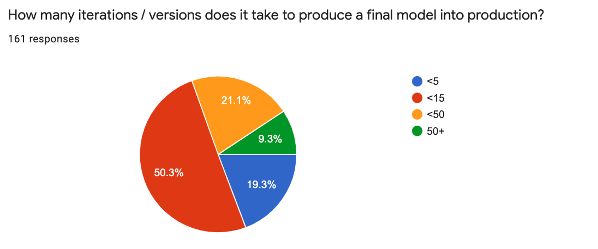

Kubeflow Continues to Move into Production
2021 State of the Kubeflow World
- Kubeflow Continues to Move Into Production
- VS Code and Jupyter Lead Dev Environments
- Using Kubeflow Goes Beyond Just Training
- User Requests
- Key Takeaways
- Join the Community
Kubeflow Users are maturing and the community is growing, forty eight percent of users are supporting deployments in production.
The Spring 2021 Kubeflow Community User Survey collected input from Kubeflow users on the benefits, gaps and requirements for machine learning use cases. It is the largest survey to date with 179 responses—a 50% increase from the Kubeflow 1.0 Community User Survey a year ago. The Survey respondents span a spectrum of skill sets. While 42% are machine learning (ML) engineers, and 24% are ML architects, the titles of the respondents vary from DevOps Engineers to data scientists and product managers.
Kubeflow Continues to Move Into Production
Forty eight percent of users are supporting deployments that are in production, up from 15% last year. Further, one question that many folks have is “do people upgrade a production deployment or just install a new cluster and start over?” It appears that the latter is far more common: just 8% have upgraded their environment.
Similar to previous years, Kubeflow Pipelines and Notebooks are the most popular components, but other components are now being widely deployed as well. Interest in TensorBoard has grown, joining KFServing, Katib (AutoML), and Distributed Training as top additional services.
Although the usage patterns for Kubeflow components are mixed, the vast majority of users need at least two Kubeflow components in their ML Platform.
TensorFlow is the leading ML Framework, followed by Scikit-learn, PyTorch, Keras, and XGBoost. However, with Kubeflow’s built-in extensibility, the type of ML tools people use in Kubeflow go beyond just training frameworks, and include MLFlow, Airflow, and Spark.
VS Code and Jupyter Lead Dev Environments
From an Integrated Development Environment (IDE) perspective, most users are developing models in Jupyter Notebooks and Visual Studio Code, and about one third are using PyCharm.
From a gap perspective, the users would like improved documentation, tutorials, and installation, along with more automation, support and security.
Using Kubeflow Goes Beyond Just Training
Users identified that data preprocessing and transformation are both the most time consuming and challenging steps. We also received feedback that pipeline building and feature engineering are both time consuming and challenging. Distributed training, model serving and monitoring appear to be more technically challenging than time consuming.

ML model delivery commonly requires multiple teams to work together i.e. data engineers, data scientists, ML engineers and devops engineers. ML workflows often include manual processes and there can be gaps in the handoffs between these groups. In particular, connecting data pipelines to ML pipelines is an example of a process that could be better automated, along with pipeline building and model monitoring.

The vast majority of Kubeflow users are self-reliant in solving complex problems:
And many are using tutorials created by Cloud Service Providers (i.e. Google, AWS and Azure) and MiniKF from Arrikto.
The majority of ML models have a fairly short life: ~50% run in production for 3 months or less. On the other end of the spectrum, 25% of the models remain in production for 6 months or longer.
And ~70% of all models take up to 15 iterations to produce a final model suitable for production.

Users have a wide range of success with their models: ~43% are getting more than half of their models to deliver business value. On the other side, 39% are getting a very small percentage (10%) of their models into production and delivering business value.
User Requests
We provided a section for free-form responses and we received a great deal of feedback. Here are some good examples of user requests:
- Metadata storage and versioning
- More robust access control and permission granularity for model/data sharing
- More visibility on your roadmap
- Installation patterns, stability, multi tenancy
- More real life case studies
- Updated and more in-depth documentation
Key Takeaways
In addition to learning about how users are operating Kubeflow in production clusters, the Community Survey has given us important data that we can use to enhance our processes:
- Improvements to the release management process, which is being driven by better inter-Working Group collaboration. This, coupled with core upgrades to Istio and a clean-up of the installation manifests, will improve the testing, documentation, and installation patterns.
- Automation of pipeline building and feature engineering tasks, especially with continued integrations of Kubeflow with Kale and Feast, which are enabling new end-to-end workflows and tutorials.
- Enhancements for data preprocessing and transformation as well as streamlined connections of Data Pipelines to ML Pipelines. Additionally, a renewed effort to develop a Spark operator.
- Several new UIs are under development i.e. Katib, Model Management, Volumes Management and TensorBoard Management, which will help the user experience.
For more details on the Community’s and specific Working Group’s deliveries, please review the Kubeflow 1.3 Release Blog post.
Join the Community
We would like to thank everyone for their participation in the survey. As you can see from the survey results, the Kubeflow Community is vibrant and diverse, solving real world problems for organizations around the world.
Want to help? The Kubeflow Community Working Groups hold open meetings, public lists, and are always looking for more volunteers and users to unlock the potential of machine learning. If you’re interested in becoming a Kubeflow contributor, please feel free to check out the resources below. We look forward to working with you!
- Visit our Kubeflow website or Kubeflow GitHub Page
- Join the Kubeflow Slack channel
- Join the kubeflow-discuss mailing list
- Attend a weekly community meeting